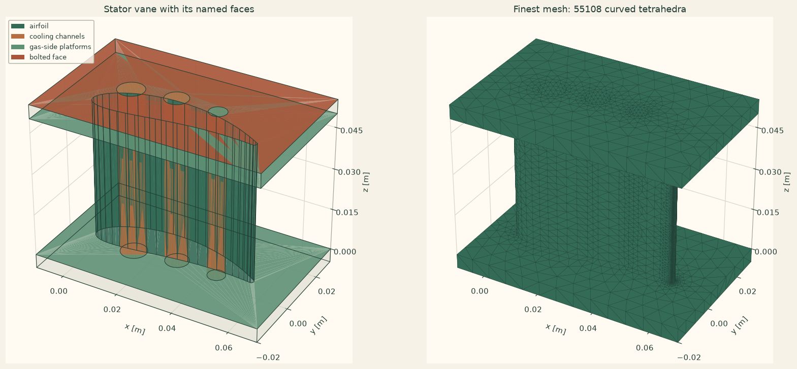

Docs › Examples › Thermal stress in a cooled turbine stator blade
Thermal stress · 3D
Thermal stress in a cooled turbine stator blade
A nickel-alloy stator vane in the hot gas, cooled from inside through three radial channels, with the thermal stress its temperature field causes.
Run locally with OneSimulation. The example downloads are free. Running them requires an activated runtime. Runtime Alpha 0.2.1a7 · CPython 3.13 on macOS (Apple Silicon), Ubuntu 22.04 (x86-64), and Windows x64. Installation and activation · View pilot plans. Scope of the reference checks.

What it computes
OneSimulation reads the vane from a STEP file with five named face groups and fills it with curved quadratic tetrahedra on three meshes. Steady heat conduction with convective films on the gas, channel and plenum faces gives the temperature, which enters linear elasticity as thermal strain on the same mesh; both symmetric systems are solved by conjugate gradients with algebraic multigrid, for the mechanics with the rigid-body motions as coarse space. The script that builds the STEP file comes with the notebook.
What it checks
The heat taken in from the gas (2,398.2 W through airfoil and platforms) leaves through channels and platform backs with an imbalance of 1.5e-13, the purely thermal load leaves no net force on the seated face, the peak airfoil temperature of 1,204.3 K changes by 0.001 % between the two finest meshes (23,688 to 55,108 tetrahedra), and the peak von Mises stress on the channel walls at mid-span (99.9 % of the wall samples, 375 MPa) by 3.6 %.
Geometry
The notebook starts at the import of the CAD file turbine_stator_blade_thermal_stress.step: STEP (AP242), readable by any CAD program, with the names of the faces that the boundary conditions use. Put it next to the notebook.


The geometry script
The script turbine_stator_blade_thermal_stress_geometry.py builds the geometry with the CAD objects of OneSimulation and writes the file. Change a dimension there, run it, and run the notebook again.
"""Geometry of the OneSimulation example "Thermal stress in a turbine stator blade".
Builds a cooled stator vane (a cambered airfoil of 60 mm chord and 50 mm span between an inner and
an outer platform, with three radial cooling channels) with the CAD objects of OneSimulation,
names the faces the simulation refers to and writes turbine_stator_blade_thermal_stress.step.
"""
import numpy as np
from onesim.cad.d2 import Profile
from onesim.cad.d3 import Box, Cylinder, Prism, UnionFromObjects
chord, span, camber, thickness, platform = 0.060, 0.050, 0.10, 0.22, 0.005
channels = ((0.012, 0.0045), (0.027, 0.0040), (0.042, 0.0030))
s = 0.95 * 0.5 * (1 - np.cos(np.linspace(0.0, np.pi, 24)))
half = (
5
* thickness
* (0.2969 * np.sqrt(s) - 0.1260 * s - 0.3516 * s**2 + 0.2843 * s**3 - 0.1036 * s**4)
)
mean = camber * 4 * s * (1 - s)
slope = np.arctan(camber * 4 * (1 - 2 * s))
upper = np.column_stack((s - half * np.sin(slope), mean + half * np.cos(slope)))
lower = np.column_stack((s + half * np.sin(slope), mean - half * np.cos(slope)))
outline = chord * np.vstack((upper[::-1][:-1], lower))
camber_line = lambda x: chord * camber * 4 * (x / chord) * (1 - x / chord)
airfoil = Prism(
profile=Profile.spline([tuple(point) for point in outline]),
height=span + 2 * platform,
origin=(0.0, 0.0, -platform),
)
inner = Box(
length=0.080, width=0.050, height=platform, origin=(-0.010, -0.020, -platform)
)
outer = Box(length=0.080, width=0.050, height=platform, origin=(-0.010, -0.020, span))
vane = UnionFromObjects(objects=[airfoil, inner, outer])
for x, radius in channels:
vane = vane - Cylinder(
radius=radius,
length=span + 4 * platform,
origin=(x, camber_line(x), -2 * platform),
)
vane = vane.grouped(
airfoil=vane.select(
faces=lambda face: face.kind not in ("plane", "cylinder")
and 1e-6 < face.center[2] < span - 1e-6
),
channels=vane.select(faces=lambda face: face.kind == "cylinder"),
gas_platforms=vane.select(
faces=lambda face: face.kind == "plane"
and (abs(face.center[2]) < 1e-9 or abs(face.center[2] - span) < 1e-9)
),
inner_back=vane.select(
faces=lambda face: face.kind == "plane"
and abs(face.center[2] + platform) < 1e-9
),
outer_back=vane.select(
faces=lambda face: face.kind == "plane"
and abs(face.center[2] - span - platform) < 1e-9
),
)
vane.save("turbine_stator_blade_thermal_stress.step")The notebook
The complete notebook, cell by cell. Run it to produce the figures and the comparison printout.
The stator vanes of a gas turbine turn the hot gas from the combustor onto the rotor. The gas is far hotter than the alloy can bear, so the vanes are cooled from inside: air taken from the compressor flows through radial channels and leaves the vane cooler than the gas around it. The price is a steep temperature gradient through the walls, and with it thermal stress, which together with creep limits the life of the part.
The vane has a cambered airfoil of 60 mm chord and 50 mm span between an inner and an outer platform, with three cooling channels. It comes from the CAD file turbine_stator_blade_thermal_stress.step with five named face groups; the script turbine_stator_blade_thermal_stress_geometry.py builds it with the CAD objects of OneSimulation.
| face | heat transfer | mechanics |
|---|---|---|
airfoil | hot gas, \(h=1200\) W/(m² K), \(T=1250\) K | free |
gas_platforms: platform faces in the gas path | hot gas, \(h=800\) W/(m² K), \(T=1250\) K | free |
channels | cooling air, \(h=1500\) W/(m² K), \(T=700\) K | free |
inner_back, outer_back | plenum air, \(h=300\) W/(m² K), \(T=750\) K | outer_back seated on a flat face: \(u_z=0\), held in its plane at two corners |
| platform edges | insulated | free |
Steady heat conduction \(\nabla\cdot(k\nabla T)=0\) with these convective conditions gives the temperature field; it enters linear elasticity as the thermal strain \(\boldsymbol\varepsilon_{th}=\alpha\,(T-T_0)\,\mathbf I\), stress free at \(T_0=293\) K.
Reference. The heat taken in from the gas must leave through the channels and the platform backs (energy balance). The vane is held on one face only, so a purely thermal load must produce no net force there. The peak temperature and the peak stress on the channel walls have no closed form; a mesh study on three meshes with Richardson extrapolation shows how far they are converged. Near the seat the stress depends on the details of the support, so the stress study takes the channel walls between 10 and 40 mm span, and as their peak the value that 99.9 % of the wall samples stay below: a single sample in a distorted cell then does not decide it.
import numpy as np
from onesim.cad.d2 import Plane
from onesim.cad.exchange import load
from onesim.materials import IsotropicSolid
from onesim.meshing import TetrahedralMesher, with_order
from onesim.numerics import Numerics
from onesim.numerics.fem import FiniteElement, Lagrange
from onesim.numerics.field_transfer import FiniteElementEvaluation
from onesim.numerics.linear import AlgebraicMultigrid, ConjugateGradient
from onesim.physics.heat_transfer import ConvectiveHeatFlux, HeatConduction, HeatFlux
from onesim.physics.solid_mechanics import (
FixedDisplacementComponents,
IsotropicThermalExpansion,
LinearElasticity,
TractionFree,
)
from onesim.results.comparisons import convergence
from onesim.simulation import Problem, Simulation
from onesim.simulation.field_connections import FieldCoupling
from onesim.visualization import plots, theme
theme.set()Geometry and mesh
load returns the vane with its named face groups. On this part the cell size is set by the curved faces: the mesher lets a cell turn by at most curvature_angle on the airfoil and in the channels, so the cells there scale with that angle. Three meshes with decreasing angles form the mesh study; with_order gives them quadratic edges that follow the curved faces.
vane = load("turbine_stator_blade_thermal_stress.step")
faces = vane.boundaries
edges = (
faces.all
- faces.airfoil
- faces.gas_platforms
- faces.channels
- faces.inner_back
- faces.outer_back
)
angles = [0.6, 0.45, 0.35]
meshes = [
with_order(
TetrahedralMesher(target_size=0.006, curvature_angle=angle).generate(vane), 2
)
for angle in angles
]
view = plots.Camera(elevation=32, azimuth=-60)
fig = plots.figure(1, 2, size=(15, 6.5))
plots.geometry(
vane,
selection={
"airfoil": faces.airfoil,
"cooling channels": faces.channels,
"gas-side platforms": faces.gas_platforms,
"seated face": faces.outer_back,
},
labels=False,
camera=view,
title="Stator vane with its named faces",
ax=fig[0],
)
plots.mesh(
meshes[-1],
groups=("all",),
legend=False,
camera=view,
title=f"Finest mesh: {meshes[-1].cell_count} curved tetrahedra",
ax=fig[1],
)
plots.show()Model
A nickel-base superalloy with properties at service temperature. Both problems are symmetric and positive definite: conjugate gradients with algebraic multigrid solve them, for the mechanics with the six rigid-body motions as the coarse space of the multigrid.
alloy = IsotropicSolid(
density=8100.0,
specific_heat_capacity=600.0,
thermal_conductivity=20.0,
youngs_modulus=170e9,
poisson_ratio=0.30,
thermal_expansion_coefficient=14e-6,
)
films = {
"airfoil": (1200.0, 1250.0),
"gas_platforms": (800.0, 1250.0),
"channels": (1500.0, 700.0),
"inner_back": (300.0, 750.0),
"outer_back": (300.0, 750.0),
}
heat = HeatConduction(domain=vane.volume, material=alloy, heating=0.0)
thermal = Problem(
name="Vane temperature",
geometry=vane,
physics=(heat,),
boundary_conditions=(
*(
ConvectiveHeatFlux(
boundary=getattr(faces, name),
physics=heat,
heat_transfer_coefficient=h,
ambient_temperature=T,
)
for name, (h, T) in films.items()
),
HeatFlux(boundary=edges, physics=heat, value=0.0),
),
)
solid = LinearElasticity(
domain=vane.volume,
material=alloy,
thermal_strain=IsotropicThermalExpansion(reference_temperature=293.15),
)
heat_numerics = Numerics(
spatial=FiniteElement(element=Lagrange(order=2)),
linear_solver=ConjugateGradient(
preconditioner=AlgebraicMultigrid(), relative_tolerance=1e-10
),
)
solid_numerics = Numerics(
spatial=FiniteElement(element=Lagrange(order=2)),
linear_solver=ConjugateGradient(
preconditioner=AlgebraicMultigrid(near_nullspace=solid.rigid_body_modes),
relative_tolerance=1e-10,
),
)Temperature and thermal stress on three meshes
On each mesh the temperature is computed first; it becomes the thermal strain of the elastic model on the same mesh. The peak temperature on the airfoil and the peak von Mises stress on the channel walls are kept for the mesh study, the fields of the finest mesh for the figures.
peak_temperature, peak_stress = [], []
for mesh in meshes:
temperature = (
Simulation(problem=thermal, mesh=mesh, numerics=heat_numerics)
.solve_stationary()
.field(heat.temperature)
)
result = Simulation(
problem=Problem(
name="Vane thermal stress",
geometry=vane,
physics=(solid,),
boundary_conditions=(
FixedDisplacementComponents(
boundary=faces.outer_back,
physics=solid,
components=("x", "y", "z"),
where={
"x": lambda x, y, z: np.hypot(x + 0.010, y + 0.020) < 1e-6,
"y": lambda x, y, z: (np.abs(y + 0.020) < 1e-6)
& ((np.abs(x + 0.010) < 1e-6) | (np.abs(x - 0.070) < 1e-6)),
},
),
TractionFree(boundary=faces.all - faces.outer_back, physics=solid),
),
couplings=(
FieldCoupling(
source=temperature,
target=solid.temperature,
transfer=FiniteElementEvaluation(),
),
),
),
mesh=mesh,
numerics=solid_numerics,
).solve_stationary()
walls = result.field(solid.von_mises_stress).sample(
along=faces.channels, subdivisions=3
)
peak_temperature.append(
temperature.sample(along=faces.airfoil, subdivisions=3).values.max()
)
peak_stress.append(
np.percentile(walls.values[np.abs(walls.positions[:, 2] - 0.025) < 0.015], 99.9)
)
displacement, mises = result.field(solid.displacement), result.field(
solid.von_mises_stress
)Results
The heat flows through every group of faces and the reaction on the seated face on the finest mesh, and the mesh study: the curvature angle stands for the cell size on the curved faces. An observed order well below that of quadratic elements means the levels are not yet in the asymptotic range; the change between the two finest meshes is then the honest error estimate, not the Richardson value.
flows = {name: -temperature.boundary_flux(getattr(faces, name)) for name in films}
studies = {
"temperature": convergence(peak_temperature, angles),
"stress": convergence(peak_stress, angles),
}
reaction = displacement.reaction(faces.outer_back)
for name, flow in flows.items():
print(f"heat flow into the vane through {name:14s} {flow:9.1f} W")
print(
f"energy balance: in {sum(f for f in flows.values() if f > 0):.1f} W, out {-sum(f for f in flows.values() if f < 0):.1f} W, "
f"imbalance {abs(sum(flows.values())) / sum(f for f in flows.values() if f > 0):.1e}"
)
print(
f"reaction on the seated face: ({reaction[0]:.2f}, {reaction[1]:.2f}, {reaction[2]:.2f}) N"
)
print(
"curvature angle [rad] tetrahedra peak temperature [K] peak von Mises (99.9 %), channel walls 10-40 mm [MPa]"
)
for angle, mesh, T, s in zip(angles, meshes, peak_temperature, peak_stress):
print(f"{angle:21.2f} {mesh.cell_count:11d} {T:20.3f} {s / 1e6:30.1f}")
for name, study in studies.items():
scale, unit = (1.0, "K") if name == "temperature" else (1e-6, "MPa")
print(
f"peak {name}: change between the two finest meshes {100 * study.change:.3f} %, "
+ (
f"observed order {study.order:.2f}, Richardson value {study.extrapolated * scale:.1f} {unit}"
if study.extrapolated is not None
else study.reason
)
)Figure
The temperature on the vane surface and across the mid-span section, the von Mises stress on the deformed vane (displacement magnified 5 times) and across the same section.
megapascal = lambda s, position: s / 1e6
mid_span = Plane(origin=(0, 0, 0.025), normal=(0, 0, 1))
fig = plots.figure(2, 2, size=(16, 12))
plots.surface(
temperature,
camera=view,
limits=(900, 1210),
label="T [K]",
title="Surface temperature",
ax=fig[0],
)
plots.section(
temperature,
plane=mid_span,
subdivisions=3,
contours=12,
limits=(900, 1210),
label="T [K]",
title="Temperature at mid-span",
xlimits=(-0.004, 0.064),
ylimits=(-0.012, 0.022),
ax=fig[1],
)
plots.surface(
mises,
component=megapascal,
deformation=displacement,
deformation_scale=5.0,
limits=(0, 400),
camera=view,
label="von Mises stress [MPa]",
title="Thermal stress on the deformed vane (×5)",
ax=fig[2],
)
plots.section(
mises,
plane=mid_span,
component=megapascal,
limits=(0, 400),
subdivisions=3,
label="von Mises stress [MPa]",
title="Thermal stress at mid-span",
xlimits=(-0.004, 0.064),
ylimits=(-0.012, 0.022),
ax=fig[3],
)
plots.show()Going further
Move or enlarge the cooling channels in turbine_stator_blade_thermal_stress_geometry.py, write the STEP file again and compare peak temperature and stress; or add a thermal barrier coating on the airfoil as a second material region and see how much it lowers the metal temperature.